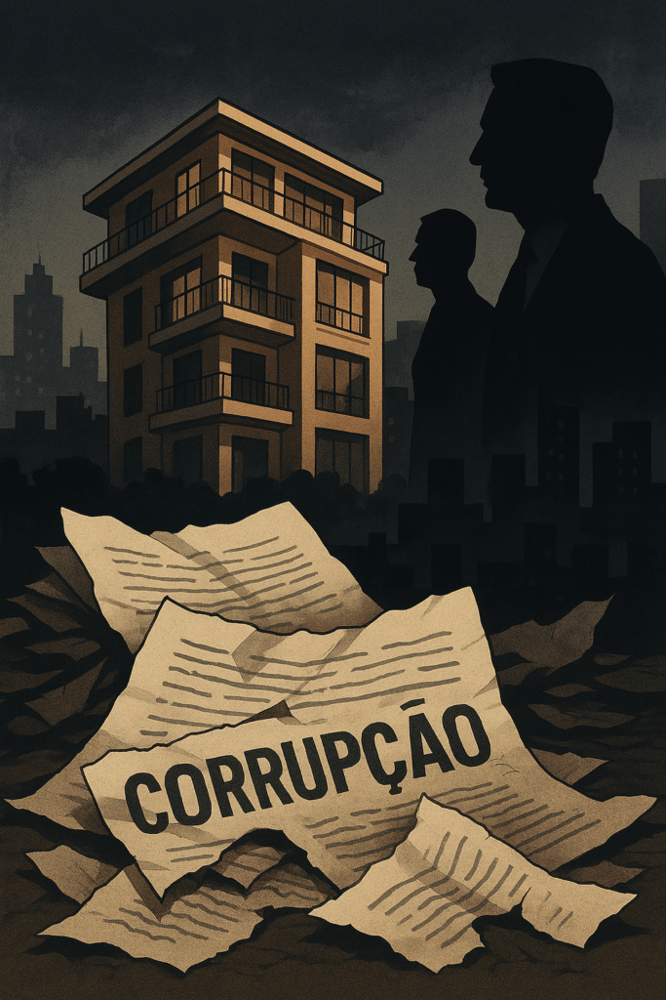

Mais uma operação da Polícia Judiciária. Mais uma suspeita de favorecimento. Mais um terreno municipal envolto em nebulosas decisões. Mais uma câmara municipal — desta vez, Cascais — sob o olhar atento dos inspetores. Desta vez, o caso tem nome: Operação Cinco Estrelas. E o padrão repete-se com uma fidelidade quase ritual.
A investigação da PJ aponta para "factos suscetíveis de enquadrar a prática dos crimes de prevaricação, participação económica em negócio e violação de regras urbanísticas por funcionário". É o vocabulário técnico de um cenário bem conhecido: a promiscuidade entre decisores públicos e interesses privados no lucrativo mundo do imobiliário urbano.
O ex-vice-presidente da Câmara de Cascais, hoje ministro das Infraestruturas, já veio afirmar que a sua conduta "foi sempre pautada pela integridade e pelo interesse de Cascais". Como sempre. Como todos. Nenhum actor nestas peças se considera corrupto. Nenhum se revê no crime. Todos são inocentes, patriotas e servidores exemplares. E no entanto, os casos acumulam-se, os padrões repetem-se, os terrenos mudam de dono a preços questionáveis, e o país vai sendo vendido, pedaço a pedaço, ao sabor dos interesses.
O que mais impressiona, porém, não é a corrupção em si. É a sua normalização. A indiferença geral. A ausência de espanto. O povo já não se revolta, apenas encolhe os ombros. Porque sabe que após a investigação virá o arquivamento, ou no pior dos casos, uma pena leve, suspensa, esquecida.
Vivemos num país onde o crime urbano não é um acto isolado, mas sim um sintoma sistémico. Onde o urbanismo serve os promotores e não os cidadãos. Onde a câmara municipal é frequentemente a porta giratória entre o público e o privado. E onde os partidos, quando no poder local, administram terrenos e licenças como moeda de troca para alianças futuras.
Cascais não é excepção. É apenas mais um capítulo desta novela de betão e silêncios. E talvez seja isso o mais grave: o facto de já não nos escandalizarmos. A corrupção deixou de ser notícia. Passou a ser rotina. E um país que se habitua ao abuso perde a capacidade de se indignar — e com ela, perde a própria dignidade.
Portugal precisa de uma revolução ética. De um sistema de fiscalização independente e sem medo. De cidadãos informados, exigentes e vigilantes. Porque enquanto as máfias do cimento continuarem a mandar, o futuro será sempre vendido ao metro quadrado